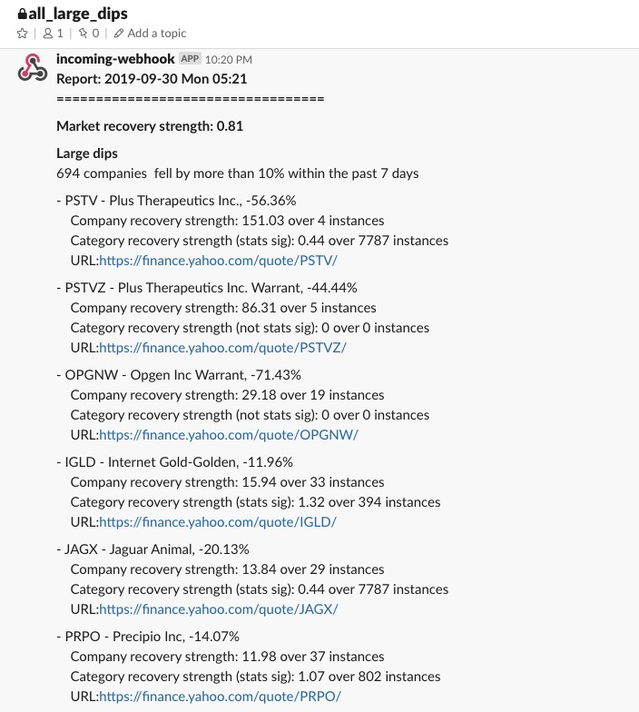

 Approximately 10% of all companies listed on Nasdaq and NYSE fell by more than 10% over the past week. Its like a magnitude 5 earthquake happened and the entire market goes into panic mode.
{kind=link}
During this occasion, it is fascinating to observe at a macro level the flow of money within the system.
Sources of liquidity
- the white house administration has cut taxes over the past 2 fiscal years between 2017 and 2018.
- the Federal reserve increase money supply through the repo market and by lowering interest rates
- Central banks around the world lower interest rates
- the high US dollar signals that money from around the world is flowing into the US market
High pressure areas
- the price of gold moves steadily upwards
- the price of US Treasury bonds signaled by the fall in US Treasury yield moves steadily upwards
- the SnP hovers near all time high
- Companies classified as value stocks are trading at all time high multiples
Anomalous vacuum
- Companies classified as growth stocks are trading at huge discounts versus all time highs
Once the psychological impact of the current set of stimulus wears off and assuming the supply of money stays constant within the US market, it is very likely money will start flowing from high pressure areas to fill up the anomalous vacuum described above.